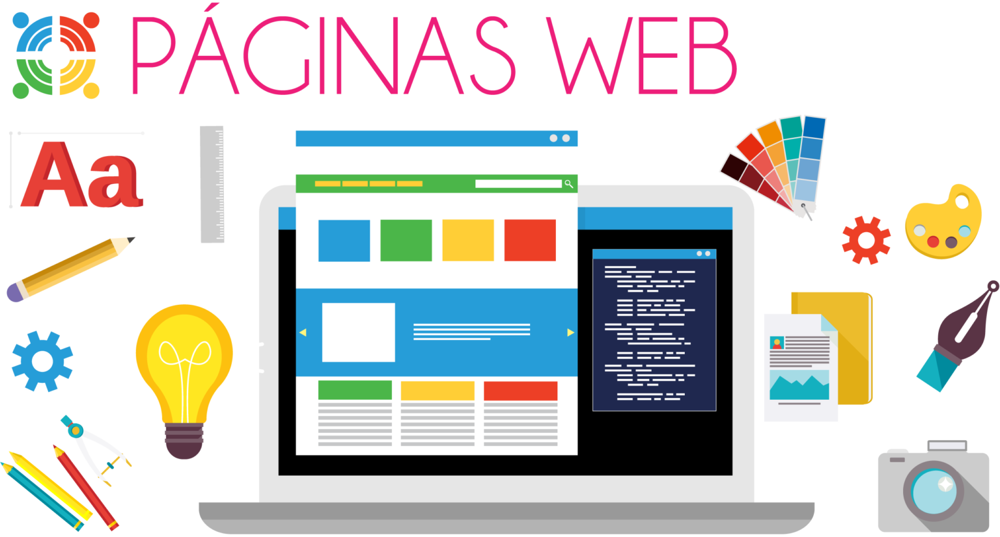

INTRODUCCIÓN

El diseño de sitios web está en auge desde hace muchos años hacia adelante, el crecimiento en la preferencia y necesidad de comunicación con las personas a través de medios virtuales ha hecho que la obtención y tenencia de páginas webs haya pasado de un lujo a una necesidad para muchas empresas y negocios.
Actualmente, cursando una generación completamente visual, donde la información les llega y solo les atrae la información que les llega por medios visuales y entre más llamativa, más estratégica y más dinámica e interactiva, mejor.
Es por esto que el diseño de sitios web es cada vez más requerido y cada vez más exigente, por lo que se debe cubrir requisitos cada vez más complejos en el menor tiempo posible y con el menor gasto de recursos necesarios, esto debido a la alta competencia que existe donde, en caso de no hacerlo de una manera óptima, simplemente otro que sí lo haga tomará el trabajo.
En el diseño de sitios webs existen herramientas que ayudan a optimizar y mejorar el trabajo, proporcionando no solo facilidades, optimización y organización; lo anterior enfocado en sitios cada vez más grandes y completos. Una de estas herramientas son las Hojas de estilo en cascada (CSS por us siglas en inglés: Cascading Style Sheets) que nos ayudan a manejar de mejor manera la parte visual de los sitios webs y Frameworks CSS que se trata de bibliotecas de estilos de CSS ya creados y testeados. Estas herramientas son muy importantes en el avance y aprendizaje del diseño de sitios web y por eso son tratados en este sitio.